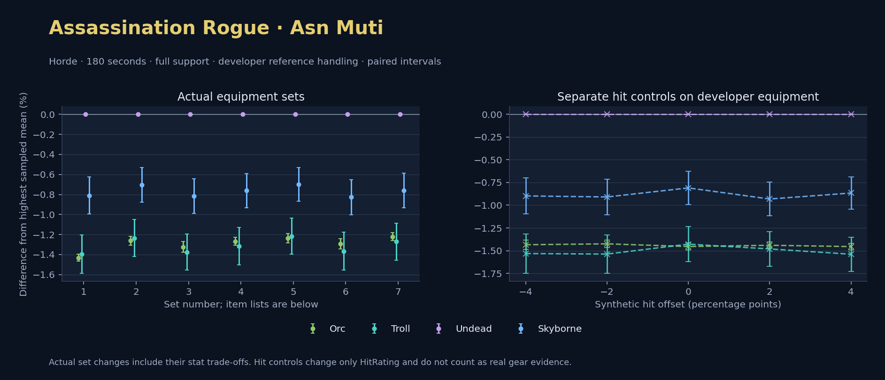

Horde · Orc / Troll / Undead / Skyborne

No pet or guardian appears in the reference combat metrics. Reference: Orc, developer equipment, 180 seconds and full support. Pet choices remain those of the developer build.
WoWSims developer · Mutilate
Unimplemented enchant or active set effects: [{"id": 1676, "pieces": 3, "effects": ["Restores 15 health per 5 sec."]}, {"id": 1676, "pieces": 5, "effects": ["When struck in combat, has a 5% chance to remove a Snare effect from yourself. Can only occur once every 60 sec."]}]
Unmeasured proc rates: [{"source": "set", "id": 1676, "pieces": 4, "kind": "ppm", "origin": "unknown"}, {"source": "item", "id": 19324, "name": "The Lobotomizer", "kind": "ppm", "origin": "vanilla"}, {"source": "enchant", "id": 1900, "name": "Enchant Weapon - Crusader", "kind": "ppm", "origin": "vanilla"}]
180 seconds, full support and original developer references. Hit below is generic sheet melee / spell hit; school and talent bonuses can be attached directly to spells.
| Race | DPS | Gap and interval | Generic hit | Replay |
|---|---|---|---|---|
| Undead | 632.14 | +0.000% ± 0.000 | 13.4% / 13.4% | Native input · Website JSON |
| Skyborne | 627.02 | -0.810% ± 0.185 | 13.4% / 13.4% | Native input · Website JSON |
| Troll | 623.32 | -1.394% ± 0.192 | 13.4% / 13.4% | Native input · Website JSON |
| Orc | 623.09 | -1.431% ± 0.035 | 13.4% / 13.4% | Native input · Website JSON |
| Slot | Item | ID | Enchant |
|---|---|---|---|
| Head | Darkmantle Cap | 226829 | Lesser Arcane Amalgamation |
| Neck | Beads of Ogre Might | 22150 | |
| Shoulder | Darkspear Pauldrons | 272105 | |
| Back | Earthweave Cloak | 21187 | Enchant Cloak - Agility |
| Chest | Darkmantle Tunic | 226825 | Enchant Chest - Living Stats |
| Wrist | Darkmantle Bracers | 226830 | Enchant Bracer - Agility |
| Hands | Darkmantle Grips | 226828 | Enchant Gloves - Greater Agility |
| Waist | Assassin's Waistguard | 272395 | |
| Legs | Darkmantle Pants | 226827 | Lesser Arcane Amalgamation |
| Feet | Darkmantle Footpads | 226831 | Enchant Boots - Minor Speed |
| Ring 1 | Don Julio's Band | 19325 | |
| Ring 2 | Might of Cenarius | 21189 | |
| Trinket 1 | Adaptive Combat Assistant | 272437 | |
| Trinket 2 | Rune of the Guard Captain | 19120 | |
| Main hand | The Lobotomizer | 19324 | Enchant Weapon - Crusader |
| Off hand | Scarlet Kris | 5267 | Enchant Weapon - Agility |
| Ranged / relic | Fahrad's Reloading Repeater | 22347 |
Published ranked alternatives · Published pre-raid
Recorded source replacements: [{"slot": "back", "from": 13340, "to": 18511, "publishedAlternativeRank": 1, "publishedEpDelta": -15.8, "reason": "First published alternative compatible with the current WoWSims database, class, faction and occupied slots."}, {"slot": "finger2", "from": 9533, "to": 285190, "publishedAlternativeRank": 3, "publishedEpDelta": -3.5, "reason": "First published alternative compatible with the current WoWSims database, class, faction and occupied slots."}, {"slot": "ranged", "from": 2100, "to": 13023, "publishedAlternativeRank": 1, "publishedEpDelta": -4, "reason": "First published alternative compatible with the current WoWSims database, class, faction and occupied slots."}]
Unimplemented enchant or active set effects: [{"id": 142, "pieces": 2, "effects": ["10% chance of dealing 20 Nature damage on a successful melee attack."]}, {"id": 142, "pieces": 3, "effects": ["4% chance on melee attack of restoring 30 energy."]}]
Unmeasured proc rates: [{"source": "enchant", "id": 1900, "name": "Enchant Weapon - Crusader", "kind": "ppm", "origin": "vanilla"}, {"source": "enchant", "id": 1900, "name": "Enchant Weapon - Crusader", "kind": "ppm", "origin": "vanilla"}]
180 seconds, full support and original developer references. Hit below is generic sheet melee / spell hit; school and talent bonuses can be attached directly to spells.
| Race | DPS | Gap and interval | Generic hit | Replay |
|---|---|---|---|---|
| Undead | 576.60 | +0.000% ± 0.000 | 9.0% / 9.0% | Native input · Website JSON |
| Skyborne | 572.55 | -0.703% ± 0.173 | 9.0% / 9.0% | Native input · Website JSON |
| Troll | 569.48 | -1.235% ± 0.183 | 9.0% / 9.0% | Native input · Website JSON |
| Orc | 569.32 | -1.262% ± 0.043 | 9.0% / 9.0% | Native input · Website JSON |
| Slot | Item | ID | Enchant |
|---|---|---|---|
| Head | Shadowcraft Cap | 16707 | Lesser Arcane Amalgamation |
| Neck | Skibi's Pendant | 13089 | Enchant Necklace - Agility |
| Shoulder | Stormshroud Shoulders | 15058 | |
| Back | Shifting Cloak | 18511 | Enchant Cloak - Agility |
| Chest | Dawn Armor | 252483 | Enchant Chest - Greater Stats |
| Wrist | Shadowcraft Bracers | 16710 | Enchant Bracer - Agility |
| Hands | Stormshroud Gloves | 21278 | Enchant Gloves - Greater Agility |
| Waist | Assassin's Waistguard | 272395 | |
| Legs | Stormshroud Pants | 15057 | Lesser Arcane Amalgamation |
| Feet | Shadowcraft Boots | 16711 | Enchant Boots - Greater Agility |
| Ring 1 | Cutthroat's Signet | 272408 | |
| Ring 2 | Wyvern Heart Band | 285190 | |
| Trinket 1 | Adaptive Combat Assistant | 272437 | |
| Trinket 2 | Rune of the Guard Captain | 19120 | |
| Main hand | Scarlet Kris | 5267 | Enchant Weapon - Crusader |
| Off hand | Heartseeker | 12783 | Enchant Weapon - Crusader |
| Ranged / relic | Eaglehorn Long Bow | 13023 |
Published one-slot hit alternative · Published pre-raid
One source-listed alternative; at least 80% of the source slot score retained. Reported hit selects the contrast; only native stats determine simulation outcomes. This is an experimental combination, not an endorsed best set.
Recorded source replacements: [{"slot": "back", "from": 13340, "to": 18511, "publishedAlternativeRank": 1, "publishedEpDelta": -15.8, "reason": "First published alternative compatible with the current WoWSims database, class, faction and occupied slots."}, {"slot": "finger2", "from": 9533, "to": 285190, "publishedAlternativeRank": 3, "publishedEpDelta": -3.5, "reason": "First published alternative compatible with the current WoWSims database, class, faction and occupied slots."}, {"slot": "ranged", "from": 2100, "to": 13023, "publishedAlternativeRank": 1, "publishedEpDelta": -4, "reason": "First published alternative compatible with the current WoWSims database, class, faction and occupied slots."}]
Unimplemented enchant or active set effects: [{"id": 142, "pieces": 2, "effects": ["10% chance of dealing 20 Nature damage on a successful melee attack."]}, {"id": 142, "pieces": 3, "effects": ["4% chance on melee attack of restoring 30 energy."]}]
Unmeasured proc rates: [{"source": "enchant", "id": 1900, "name": "Enchant Weapon - Crusader", "kind": "ppm", "origin": "vanilla"}, {"source": "enchant", "id": 1900, "name": "Enchant Weapon - Crusader", "kind": "ppm", "origin": "vanilla"}]
180 seconds, full support and original developer references. Hit below is generic sheet melee / spell hit; school and talent bonuses can be attached directly to spells.
| Race | DPS | Gap and interval | Generic hit | Replay |
|---|---|---|---|---|
| Undead | 571.29 | +0.000% ± 0.000 | 8.0% / 8.0% | Native input · Website JSON |
| Skyborne | 566.62 | -0.817% ± 0.173 | 8.0% / 8.0% | Native input · Website JSON |
| Orc | 563.72 | -1.325% ± 0.053 | 8.0% / 8.0% | Native input · Website JSON |
| Troll | 563.43 | -1.375% ± 0.181 | 8.0% / 8.0% | Native input · Website JSON |
| Slot | Item | ID | Enchant |
|---|---|---|---|
| Head | Shadowcraft Cap | 16707 | Lesser Arcane Amalgamation |
| Neck | Skibi's Pendant | 13089 | Enchant Necklace - Agility |
| Shoulder | Stormshroud Shoulders | 15058 | |
| Back | Shifting Cloak | 18511 | Enchant Cloak - Agility |
| Chest | Timbermaw Tunic | 252484 | Enchant Chest - Greater Stats |
| Wrist | Shadowcraft Bracers | 16710 | Enchant Bracer - Agility |
| Hands | Stormshroud Gloves | 21278 | Enchant Gloves - Greater Agility |
| Waist | Assassin's Waistguard | 272395 | |
| Legs | Stormshroud Pants | 15057 | Lesser Arcane Amalgamation |
| Feet | Shadowcraft Boots | 16711 | Enchant Boots - Greater Agility |
| Ring 1 | Cutthroat's Signet | 272408 | |
| Ring 2 | Wyvern Heart Band | 285190 | |
| Trinket 1 | Adaptive Combat Assistant | 272437 | |
| Trinket 2 | Rune of the Guard Captain | 19120 | |
| Main hand | Scarlet Kris | 5267 | Enchant Weapon - Crusader |
| Off hand | Heartseeker | 12783 | Enchant Weapon - Crusader |
| Ranged / relic | Eaglehorn Long Bow | 13023 |
Published one-slot hit alternative · Published pre-raid
One source-listed alternative; at least 80% of the source slot score retained. Reported hit selects the contrast; only native stats determine simulation outcomes. This is an experimental combination, not an endorsed best set.
Recorded source replacements: [{"slot": "back", "from": 13340, "to": 18511, "publishedAlternativeRank": 1, "publishedEpDelta": -15.8, "reason": "First published alternative compatible with the current WoWSims database, class, faction and occupied slots."}, {"slot": "finger2", "from": 9533, "to": 285190, "publishedAlternativeRank": 3, "publishedEpDelta": -3.5, "reason": "First published alternative compatible with the current WoWSims database, class, faction and occupied slots."}, {"slot": "ranged", "from": 2100, "to": 13023, "publishedAlternativeRank": 1, "publishedEpDelta": -4, "reason": "First published alternative compatible with the current WoWSims database, class, faction and occupied slots."}]
Unimplemented enchant or active set effects: [{"id": 142, "pieces": 2, "effects": ["10% chance of dealing 20 Nature damage on a successful melee attack."]}, {"id": 142, "pieces": 3, "effects": ["4% chance on melee attack of restoring 30 energy."]}]
Unmeasured proc rates: [{"source": "enchant", "id": 1900, "name": "Enchant Weapon - Crusader", "kind": "ppm", "origin": "vanilla"}, {"source": "enchant", "id": 1900, "name": "Enchant Weapon - Crusader", "kind": "ppm", "origin": "vanilla"}]
180 seconds, full support and original developer references. Hit below is generic sheet melee / spell hit; school and talent bonuses can be attached directly to spells.
| Race | DPS | Gap and interval | Generic hit | Replay |
|---|---|---|---|---|
| Undead | 580.97 | +0.000% ± 0.000 | 10.0% / 10.0% | Native input · Website JSON |
| Skyborne | 576.55 | -0.762% ± 0.169 | 10.0% / 10.0% | Native input · Website JSON |
| Orc | 573.61 | -1.268% ± 0.039 | 10.0% / 10.0% | Native input · Website JSON |
| Troll | 573.33 | -1.316% ± 0.185 | 10.0% / 10.0% | Native input · Website JSON |
| Slot | Item | ID | Enchant |
|---|---|---|---|
| Head | Shadowcraft Cap | 16707 | Lesser Arcane Amalgamation |
| Neck | Skibi's Pendant | 13089 | Enchant Necklace - Agility |
| Shoulder | Stormshroud Shoulders | 15058 | |
| Back | Howler's Furs | 272414 | Enchant Cloak - Agility |
| Chest | Dawn Armor | 252483 | Enchant Chest - Greater Stats |
| Wrist | Shadowcraft Bracers | 16710 | Enchant Bracer - Agility |
| Hands | Stormshroud Gloves | 21278 | Enchant Gloves - Greater Agility |
| Waist | Assassin's Waistguard | 272395 | |
| Legs | Stormshroud Pants | 15057 | Lesser Arcane Amalgamation |
| Feet | Shadowcraft Boots | 16711 | Enchant Boots - Greater Agility |
| Ring 1 | Cutthroat's Signet | 272408 | |
| Ring 2 | Wyvern Heart Band | 285190 | |
| Trinket 1 | Adaptive Combat Assistant | 272437 | |
| Trinket 2 | Rune of the Guard Captain | 19120 | |
| Main hand | Scarlet Kris | 5267 | Enchant Weapon - Crusader |
| Off hand | Heartseeker | 12783 | Enchant Weapon - Crusader |
| Ranged / relic | Eaglehorn Long Bow | 13023 |
Published ranked alternatives · Published pre-raid
Recorded source replacements: [{"slot": "back", "from": 13340, "to": 18511, "publishedAlternativeRank": 1, "publishedEpDelta": -15.8, "reason": "First published alternative compatible with the current WoWSims database, class, faction and occupied slots."}, {"slot": "finger2", "from": 9533, "to": 285190, "publishedAlternativeRank": 3, "publishedEpDelta": -3.5, "reason": "First published alternative compatible with the current WoWSims database, class, faction and occupied slots."}, {"slot": "ranged", "from": 2100, "to": 13023, "publishedAlternativeRank": 1, "publishedEpDelta": -4, "reason": "First published alternative compatible with the current WoWSims database, class, faction and occupied slots."}]
Unimplemented enchant or active set effects: [{"id": 142, "pieces": 2, "effects": ["10% chance of dealing 20 Nature damage on a successful melee attack."]}, {"id": 142, "pieces": 3, "effects": ["4% chance on melee attack of restoring 30 energy."]}]
Unmeasured proc rates: [{"source": "enchant", "id": 1900, "name": "Enchant Weapon - Crusader", "kind": "ppm", "origin": "vanilla"}, {"source": "enchant", "id": 1900, "name": "Enchant Weapon - Crusader", "kind": "ppm", "origin": "vanilla"}]
180 seconds, full support and original developer references. Hit below is generic sheet melee / spell hit; school and talent bonuses can be attached directly to spells.
| Race | DPS | Gap and interval | Generic hit | Replay |
|---|---|---|---|---|
| Undead | 575.14 | +0.000% ± 0.000 | 8.3% / 8.3% | Native input · Website JSON |
| Skyborne | 571.12 | -0.699% ± 0.168 | 8.3% / 8.3% | Native input · Website JSON |
| Troll | 568.14 | -1.217% ± 0.180 | 8.3% / 8.3% | Native input · Website JSON |
| Orc | 568.03 | -1.237% ± 0.046 | 8.3% / 8.3% | Native input · Website JSON |
| Slot | Item | ID | Enchant |
|---|---|---|---|
| Head | Shadowcraft Cap | 16707 | Lesser Arcane Amalgamation |
| Neck | Skibi's Pendant | 13089 | Enchant Necklace - Agility |
| Shoulder | Stormshroud Shoulders | 15058 | |
| Back | Shifting Cloak | 18511 | Enchant Cloak - Agility |
| Chest | Dawn Armor | 252483 | Enchant Chest - Greater Stats |
| Wrist | Shadowcraft Bracers | 16710 | Enchant Bracer - Agility |
| Hands | Stormshroud Gloves | 21278 | Enchant Gloves - Greater Agility |
| Waist | Assassin's Waistguard | 272395 | |
| Legs | Stormshroud Pants | 15057 | Lesser Arcane Amalgamation |
| Feet | Shadowcraft Boots | 16711 | Enchant Boots - Greater Agility |
| Ring 1 | Cutthroat's Signet | 272408 | |
| Ring 2 | Wyvern Heart Band | 285190 | |
| Trinket 1 | Adaptive Combat Assistant | 272437 | |
| Trinket 2 | Molten Heart of the Mountain | 249470 | |
| Main hand | Scarlet Kris | 5267 | Enchant Weapon - Crusader |
| Off hand | Heartseeker | 12783 | Enchant Weapon - Crusader |
| Ranged / relic | Eaglehorn Long Bow | 13023 |
Published one-slot hit alternative · Published pre-raid
One source-listed alternative; at least 80% of the source slot score retained. Reported hit selects the contrast; only native stats determine simulation outcomes. This is an experimental combination, not an endorsed best set.
Recorded source replacements: [{"slot": "back", "from": 13340, "to": 18511, "publishedAlternativeRank": 1, "publishedEpDelta": -15.8, "reason": "First published alternative compatible with the current WoWSims database, class, faction and occupied slots."}, {"slot": "finger2", "from": 9533, "to": 285190, "publishedAlternativeRank": 3, "publishedEpDelta": -3.5, "reason": "First published alternative compatible with the current WoWSims database, class, faction and occupied slots."}, {"slot": "ranged", "from": 2100, "to": 13023, "publishedAlternativeRank": 1, "publishedEpDelta": -4, "reason": "First published alternative compatible with the current WoWSims database, class, faction and occupied slots."}]
Unimplemented enchant or active set effects: [{"id": 142, "pieces": 2, "effects": ["10% chance of dealing 20 Nature damage on a successful melee attack."]}, {"id": 142, "pieces": 3, "effects": ["4% chance on melee attack of restoring 30 energy."]}]
Unmeasured proc rates: [{"source": "enchant", "id": 1900, "name": "Enchant Weapon - Crusader", "kind": "ppm", "origin": "vanilla"}, {"source": "enchant", "id": 1900, "name": "Enchant Weapon - Crusader", "kind": "ppm", "origin": "vanilla"}]
180 seconds, full support and original developer references. Hit below is generic sheet melee / spell hit; school and talent bonuses can be attached directly to spells.
| Race | DPS | Gap and interval | Generic hit | Replay |
|---|---|---|---|---|
| Undead | 569.19 | +0.000% ± 0.000 | 7.3% / 7.3% | Native input · Website JSON |
| Skyborne | 564.48 | -0.827% ± 0.175 | 7.3% / 7.3% | Native input · Website JSON |
| Orc | 561.83 | -1.294% ± 0.051 | 7.3% / 7.3% | Native input · Website JSON |
| Troll | 561.42 | -1.366% ± 0.188 | 7.3% / 7.3% | Native input · Website JSON |
| Slot | Item | ID | Enchant |
|---|---|---|---|
| Head | Shadowcraft Cap | 16707 | Lesser Arcane Amalgamation |
| Neck | Skibi's Pendant | 13089 | Enchant Necklace - Agility |
| Shoulder | Stormshroud Shoulders | 15058 | |
| Back | Shifting Cloak | 18511 | Enchant Cloak - Agility |
| Chest | Timbermaw Tunic | 252484 | Enchant Chest - Greater Stats |
| Wrist | Shadowcraft Bracers | 16710 | Enchant Bracer - Agility |
| Hands | Stormshroud Gloves | 21278 | Enchant Gloves - Greater Agility |
| Waist | Assassin's Waistguard | 272395 | |
| Legs | Stormshroud Pants | 15057 | Lesser Arcane Amalgamation |
| Feet | Shadowcraft Boots | 16711 | Enchant Boots - Greater Agility |
| Ring 1 | Cutthroat's Signet | 272408 | |
| Ring 2 | Wyvern Heart Band | 285190 | |
| Trinket 1 | Adaptive Combat Assistant | 272437 | |
| Trinket 2 | Molten Heart of the Mountain | 249470 | |
| Main hand | Scarlet Kris | 5267 | Enchant Weapon - Crusader |
| Off hand | Heartseeker | 12783 | Enchant Weapon - Crusader |
| Ranged / relic | Eaglehorn Long Bow | 13023 |
Published one-slot hit alternative · Published pre-raid
One source-listed alternative; at least 80% of the source slot score retained. Reported hit selects the contrast; only native stats determine simulation outcomes. This is an experimental combination, not an endorsed best set.
Recorded source replacements: [{"slot": "back", "from": 13340, "to": 18511, "publishedAlternativeRank": 1, "publishedEpDelta": -15.8, "reason": "First published alternative compatible with the current WoWSims database, class, faction and occupied slots."}, {"slot": "finger2", "from": 9533, "to": 285190, "publishedAlternativeRank": 3, "publishedEpDelta": -3.5, "reason": "First published alternative compatible with the current WoWSims database, class, faction and occupied slots."}, {"slot": "ranged", "from": 2100, "to": 13023, "publishedAlternativeRank": 1, "publishedEpDelta": -4, "reason": "First published alternative compatible with the current WoWSims database, class, faction and occupied slots."}]
Unimplemented enchant or active set effects: [{"id": 142, "pieces": 2, "effects": ["10% chance of dealing 20 Nature damage on a successful melee attack."]}, {"id": 142, "pieces": 3, "effects": ["4% chance on melee attack of restoring 30 energy."]}]
Unmeasured proc rates: [{"source": "enchant", "id": 1900, "name": "Enchant Weapon - Crusader", "kind": "ppm", "origin": "vanilla"}, {"source": "enchant", "id": 1900, "name": "Enchant Weapon - Crusader", "kind": "ppm", "origin": "vanilla"}]
180 seconds, full support and original developer references. Hit below is generic sheet melee / spell hit; school and talent bonuses can be attached directly to spells.
| Race | DPS | Gap and interval | Generic hit | Replay |
|---|---|---|---|---|
| Undead | 579.27 | +0.000% ± 0.000 | 9.3% / 9.3% | Native input · Website JSON |
| Skyborne | 574.87 | -0.760% ± 0.172 | 9.3% / 9.3% | Native input · Website JSON |
| Orc | 572.20 | -1.221% ± 0.039 | 9.3% / 9.3% | Native input · Website JSON |
| Troll | 571.91 | -1.271% ± 0.183 | 9.3% / 9.3% | Native input · Website JSON |
| Slot | Item | ID | Enchant |
|---|---|---|---|
| Head | Shadowcraft Cap | 16707 | Lesser Arcane Amalgamation |
| Neck | Skibi's Pendant | 13089 | Enchant Necklace - Agility |
| Shoulder | Stormshroud Shoulders | 15058 | |
| Back | Howler's Furs | 272414 | Enchant Cloak - Agility |
| Chest | Dawn Armor | 252483 | Enchant Chest - Greater Stats |
| Wrist | Shadowcraft Bracers | 16710 | Enchant Bracer - Agility |
| Hands | Stormshroud Gloves | 21278 | Enchant Gloves - Greater Agility |
| Waist | Assassin's Waistguard | 272395 | |
| Legs | Stormshroud Pants | 15057 | Lesser Arcane Amalgamation |
| Feet | Shadowcraft Boots | 16711 | Enchant Boots - Greater Agility |
| Ring 1 | Cutthroat's Signet | 272408 | |
| Ring 2 | Wyvern Heart Band | 285190 | |
| Trinket 1 | Adaptive Combat Assistant | 272437 | |
| Trinket 2 | Molten Heart of the Mountain | 249470 | |
| Main hand | Scarlet Kris | 5267 | Enchant Weapon - Crusader |
| Off hand | Heartseeker | 12783 | Enchant Weapon - Crusader |
| Ranged / relic | Eaglehorn Long Bow | 13023 |
The same declared pool is available to every race. Each race keeps its best validation-sample set with its screening-selected racial policy. Separate samples confirm that choice, with fresh precision samples near the practical-loss boundary. Gaps use the highest sampled mean under that same duration, support and reference treatment as their reference. A zero reference gap does not certify a race; the main matrix also allows uncertainty in the leader.
| Pool | Seconds | Support | References | Race | DPS | Gap and interval | Racial policies / mana | Selected set | Generic hit: melee / spell | Replay |
|---|---|---|---|---|---|---|---|---|---|---|
| published-pre-raid | 60 | full | developer | Undead | 620.49 | +0.000% ± 0.0005,000 iterations | developer / developer / developerMana waits 0.0s | published-rogue-assassination-horde-710660c87369de2d-higher-hit | 9.3% / 9.3% | Input · Result · Stats |
| published-pre-raid | 60 | full | developer | Troll | 617.63 | -0.460% ± 0.1395,000 iterations | developer / developer / developerMana waits 0.0s | published-rogue-assassination-horde-710660c87369de2d-higher-hit | 9.3% / 9.3% | Input · Result · Stats |
| published-pre-raid | 60 | full | developer | Orc | 615.16 | -0.858% ± 0.0295,000 iterations | developer / developer / developerMana waits 0.0s | published-rogue-assassination-horde-710660c87369de2d-higher-hit | 9.3% / 9.3% | Input · Result · Stats |
| published-pre-raid | 60 | full | developer | Skyborne | 614.91 | -0.899% ± 0.1175,000 iterations | developer / developer / developerMana waits 0.0s | published-rogue-assassination-horde-710660c87369de2d-higher-hit | 9.3% / 9.3% | Input · Result · Stats |
| published-pre-raid | 60 | full | explicit | Undead | 604.73 | +0.000% ± 0.0005,000 iterations | developer / developer / developerMana waits 0.0s | published-rogue-assassination-horde-710660c87369de2d-higher-hit | 9.3% / 9.3% | Input · Result · Stats |
| published-pre-raid | 60 | full | explicit | Troll | 601.34 | -0.560% ± 0.1375,000 iterations | oncd / developer / developerMana waits 0.0s | published-rogue-assassination-horde-710660c87369de2d-higher-hit | 9.3% / 9.3% | Input · Result · Stats |
| published-pre-raid | 60 | full | explicit | Skyborne | 599.00 | -0.947% ± 0.1185,000 iterations | developer / developer / developerMana waits 0.0s | published-rogue-assassination-horde-710660c87369de2d-higher-hit | 9.3% / 9.3% | Input · Result · Stats |
| published-pre-raid | 60 | full | explicit | Orc | 598.50 | -1.029% ± 0.0305,000 iterations | oncd / developer / developerMana waits 0.0s | published-rogue-assassination-horde-710660c87369de2d-higher-hit | 9.3% / 9.3% | Input · Result · Stats |
| published-pre-raid | 60 | self | developer | Undead | 335.63 | +0.000% ± 0.0005,000 iterations | developer / developer / developerMana waits 0.0s | published-rogue-assassination-horde-710660c87369de2d-higher-hit | 9.3% / 9.3% | Input · Result · Stats |
| published-pre-raid | 60 | self | developer | Troll | 331.02 | -1.374% ± 0.1385,000 iterations | developer / developer / developerMana waits 0.0s | published-rogue-assassination-horde-710660c87369de2d-higher-hit | 9.3% / 9.3% | Input · Result · Stats |
| published-pre-raid | 60 | self | developer | Skyborne | 329.65 | -1.781% ± 0.1175,000 iterations | developer / developer / developerMana waits 0.0s | published-rogue-assassination-horde-710660c87369de2d-higher-hit | 9.3% / 9.3% | Input · Result · Stats |
| published-pre-raid | 60 | self | developer | Orc | 328.86 | -2.018% ± 0.0425,000 iterations | developer / developer / developerMana waits 0.0s | published-rogue-assassination-horde-710660c87369de2d-higher-hit | 9.3% / 9.3% | Input · Result · Stats |
| published-pre-raid | 60 | self | explicit | Undead | 325.24 | +0.000% ± 0.0005,000 iterations | developer / developer / developerMana waits 0.0s | published-rogue-assassination-horde-710660c87369de2d-higher-hit | 9.3% / 9.3% | Input · Result · Stats |
| published-pre-raid | 60 | self | explicit | Troll | 320.54 | -1.446% ± 0.1355,000 iterations | developer / developer / developerMana waits 0.0s | published-rogue-assassination-horde-710660c87369de2d-higher-hit | 9.3% / 9.3% | Input · Result · Stats |
| published-pre-raid | 60 | self | explicit | Skyborne | 319.20 | -1.856% ± 0.1155,000 iterations | developer / developer / developerMana waits 0.0s | published-rogue-assassination-horde-710660c87369de2d-higher-hit | 9.3% / 9.3% | Input · Result · Stats |
| published-pre-raid | 60 | self | explicit | Orc | 317.97 | -2.235% ± 0.0435,000 iterations | oncd / developer / developerMana waits 0.0s | published-rogue-assassination-horde-710660c87369de2d-higher-hit | 9.3% / 9.3% | Input · Result · Stats |
| published-pre-raid | 180 | full | developer | Undead | 580.09 | +0.000% ± 0.0005,000 iterations | developer / developer / developerMana waits 0.0s | published-rogue-assassination-horde-27e74e0b08b57004-higher-hit | 10.0% / 10.0% | Input · Result · Stats · Website JSON |
| published-pre-raid | 180 | full | developer | Skyborne | 575.44 | -0.802% ± 0.0785,000 iterations | developer / developer / developerMana waits 0.0s | published-rogue-assassination-horde-27e74e0b08b57004-higher-hit | 10.0% / 10.0% | Input · Result · Stats · Website JSON |
| published-pre-raid | 180 | full | developer | Orc | 572.72 | -1.271% ± 0.0185,000 iterations | developer / developer / developerMana waits 0.0s | published-rogue-assassination-horde-27e74e0b08b57004-higher-hit | 10.0% / 10.0% | Input · Result · Stats · Website JSON |
| published-pre-raid | 180 | full | developer | Troll | 572.49 | -1.310% ± 0.0815,000 iterations | developer / developer / developerMana waits 0.0s | published-rogue-assassination-horde-27e74e0b08b57004-higher-hit | 10.0% / 10.0% | Input · Result · Stats · Website JSON |
| published-pre-raid | 180 | full | explicit | Undead | 571.47 | +0.000% ± 0.0005,000 iterations | developer / developer / developerMana waits 0.0s | published-rogue-assassination-horde-27e74e0b08b57004-higher-hit | 10.0% / 10.0% | Input · Result · Stats |
| published-pre-raid | 180 | full | explicit | Skyborne | 566.66 | -0.843% ± 0.0785,000 iterations | developer / developer / developerMana waits 0.0s | published-rogue-assassination-horde-27e74e0b08b57004-higher-hit | 10.0% / 10.0% | Input · Result · Stats |
| published-pre-raid | 180 | full | explicit | Troll | 563.86 | -1.332% ± 0.0825,000 iterations | developer / developer / developerMana waits 0.0s | published-rogue-assassination-horde-27e74e0b08b57004-higher-hit | 10.0% / 10.0% | Input · Result · Stats |
| published-pre-raid | 180 | full | explicit | Orc | 563.71 | -1.358% ± 0.0225,000 iterations | oncd / developer / developerMana waits 0.0s | published-rogue-assassination-horde-27e74e0b08b57004-higher-hit | 10.0% / 10.0% | Input · Result · Stats |
| published-pre-raid | 180 | self | developer | Undead | 307.91 | +0.000% ± 0.0005,000 iterations | developer / developer / developerMana waits 0.0s | published-rogue-assassination-horde-27e74e0b08b57004-higher-hit | 10.0% / 10.0% | Input · Result · Stats |
| published-pre-raid | 180 | self | developer | Skyborne | 302.34 | -1.808% ± 0.0795,000 iterations | developer / developer / developerMana waits 0.0s | published-rogue-assassination-horde-27e74e0b08b57004-higher-hit | 10.0% / 10.0% | Input · Result · Stats |
| published-pre-raid | 180 | self | developer | Troll | 300.99 | -2.247% ± 0.0845,000 iterations | developer / developer / developerMana waits 0.0s | published-rogue-assassination-horde-27e74e0b08b57004-higher-hit | 10.0% / 10.0% | Input · Result · Stats |
| published-pre-raid | 180 | self | developer | Orc | 300.53 | -2.395% ± 0.0285,000 iterations | oncd / developer / developerMana waits 0.0s | published-rogue-assassination-horde-27e74e0b08b57004-higher-hit | 10.0% / 10.0% | Input · Result · Stats |
| published-pre-raid | 180 | self | explicit | Undead | 302.30 | +0.000% ± 0.0005,000 iterations | developer / developer / developerMana waits 0.0s | published-rogue-assassination-horde-27e74e0b08b57004-higher-hit | 10.0% / 10.0% | Input · Result · Stats |
| published-pre-raid | 180 | self | explicit | Skyborne | 296.66 | -1.867% ± 0.0795,000 iterations | developer / developer / developerMana waits 0.0s | published-rogue-assassination-horde-27e74e0b08b57004-higher-hit | 10.0% / 10.0% | Input · Result · Stats |
| published-pre-raid | 180 | self | explicit | Troll | 295.41 | -2.282% ± 0.0855,000 iterations | developer / developer / developerMana waits 0.0s | published-rogue-assassination-horde-27e74e0b08b57004-higher-hit | 10.0% / 10.0% | Input · Result · Stats |
| published-pre-raid | 180 | self | explicit | Orc | 294.78 | -2.489% ± 0.0305,000 iterations | oncd / developer / developerMana waits 0.0s | published-rogue-assassination-horde-27e74e0b08b57004-higher-hit | 10.0% / 10.0% | Input · Result · Stats |
| published-pre-raid | 300 | full | developer | Undead | 573.58 | +0.000% ± 0.0005,000 iterations | developer / developer / developerMana waits 0.0s | published-rogue-assassination-horde-27e74e0b08b57004-higher-hit | 10.0% / 10.0% | Input · Result · Stats |
| published-pre-raid | 300 | full | developer | Skyborne | 569.20 | -0.764% ± 0.0655,000 iterations | developer / developer / developerMana waits 0.0s | published-rogue-assassination-horde-27e74e0b08b57004-higher-hit | 10.0% / 10.0% | Input · Result · Stats |
| published-pre-raid | 300 | full | developer | Troll | 566.57 | -1.223% ± 0.0665,000 iterations | oncd / developer / developerMana waits 0.0s | published-rogue-assassination-horde-27e74e0b08b57004-higher-hit | 10.0% / 10.0% | Input · Result · Stats |
| published-pre-raid | 300 | full | developer | Orc | 565.90 | -1.340% ± 0.0165,000 iterations | developer / developer / developerMana waits 0.0s | published-rogue-assassination-horde-27e74e0b08b57004-higher-hit | 10.0% / 10.0% | Input · Result · Stats |
| published-pre-raid | 300 | full | explicit | Undead | 565.28 | +0.000% ± 0.0005,000 iterations | developer / developer / developerMana waits 0.0s | published-rogue-assassination-horde-27e74e0b08b57004-higher-hit | 10.0% / 10.0% | Input · Result · Stats |
| published-pre-raid | 300 | full | explicit | Skyborne | 560.70 | -0.809% ± 0.0655,000 iterations | developer / developer / developerMana waits 0.0s | published-rogue-assassination-horde-27e74e0b08b57004-higher-hit | 10.0% / 10.0% | Input · Result · Stats |
| published-pre-raid | 300 | full | explicit | Troll | 558.20 | -1.252% ± 0.0675,000 iterations | developer / developer / developerMana waits 0.0s | published-rogue-assassination-horde-27e74e0b08b57004-higher-hit | 10.0% / 10.0% | Input · Result · Stats |
| published-pre-raid | 300 | full | explicit | Orc | 557.25 | -1.419% ± 0.0215,000 iterations | oncd / developer / developerMana waits 0.0s | published-rogue-assassination-horde-27e74e0b08b57004-higher-hit | 10.0% / 10.0% | Input · Result · Stats |
| published-pre-raid | 300 | self | developer | Undead | 303.34 | +0.000% ± 0.0005,000 iterations | developer / developer / developerMana waits 0.0s | published-rogue-assassination-horde-27e74e0b08b57004-higher-hit | 10.0% / 10.0% | Input · Result · Stats |
| published-pre-raid | 300 | self | developer | Skyborne | 297.92 | -1.786% ± 0.0675,000 iterations | developer / developer / developerMana waits 0.0s | published-rogue-assassination-horde-27e74e0b08b57004-higher-hit | 10.0% / 10.0% | Input · Result · Stats |
| published-pre-raid | 300 | self | developer | Troll | 296.85 | -2.142% ± 0.0695,000 iterations | oncd / developer / developerMana waits 0.0s | published-rogue-assassination-horde-27e74e0b08b57004-higher-hit | 10.0% / 10.0% | Input · Result · Stats |
| published-pre-raid | 300 | self | developer | Orc | 295.98 | -2.426% ± 0.0235,000 iterations | developer / developer / developerMana waits 0.0s | published-rogue-assassination-horde-27e74e0b08b57004-higher-hit | 10.0% / 10.0% | Input · Result · Stats |
| published-pre-raid | 300 | self | explicit | Undead | 297.97 | +0.000% ± 0.0005,000 iterations | developer / developer / developerMana waits 0.0s | published-rogue-assassination-horde-27e74e0b08b57004-higher-hit | 10.0% / 10.0% | Input · Result · Stats |
| published-pre-raid | 300 | self | explicit | Skyborne | 292.46 | -1.850% ± 0.0665,000 iterations | developer / developer / developerMana waits 0.0s | published-rogue-assassination-horde-27e74e0b08b57004-higher-hit | 10.0% / 10.0% | Input · Result · Stats |
| published-pre-raid | 300 | self | explicit | Troll | 291.43 | -2.194% ± 0.0695,000 iterations | developer / developer / developerMana waits 0.0s | published-rogue-assassination-horde-27e74e0b08b57004-higher-hit | 10.0% / 10.0% | Input · Result · Stats |
| published-pre-raid | 300 | self | explicit | Orc | 290.41 | -2.537% ± 0.0265,000 iterations | oncd / developer / developerMana waits 0.0s | published-rogue-assassination-horde-27e74e0b08b57004-higher-hit | 10.0% / 10.0% | Input · Result · Stats |
| developer-reference | 60 | full | developer | Undead | 674.89 | +0.000% ± 0.0005,000 iterations | developer / developer / developerMana waits 0.0s | developer | 13.4% / 13.4% | Input · Result · Stats |
| developer-reference | 60 | full | developer | Troll | 671.62 | -0.485% ± 0.1505,000 iterations | oncd / developer / developerMana waits 0.0s | developer | 13.4% / 13.4% | Input · Result · Stats |
| developer-reference | 60 | full | developer | Orc | 667.85 | -1.043% ± 0.0225,000 iterations | developer / developer / developerMana waits 0.0s | developer | 13.4% / 13.4% | Input · Result · Stats |
| developer-reference | 60 | full | developer | Skyborne | 666.60 | -1.229% ± 0.1305,000 iterations | developer / developer / developerMana waits 0.0s | developer | 13.4% / 13.4% | Input · Result · Stats |
| developer-reference | 60 | full | explicit | Undead | 657.87 | +0.000% ± 0.0005,000 iterations | developer / developer / developerMana waits 0.0s | developer | 13.4% / 13.4% | Input · Result · Stats |
| developer-reference | 60 | full | explicit | Troll | 654.44 | -0.522% ± 0.1515,000 iterations | oncd / developer / developerMana waits 0.0s | developer | 13.4% / 13.4% | Input · Result · Stats |
| developer-reference | 60 | full | explicit | Orc | 649.98 | -1.199% ± 0.0235,000 iterations | oncd / developer / developerMana waits 0.0s | developer | 13.4% / 13.4% | Input · Result · Stats |
| developer-reference | 60 | full | explicit | Skyborne | 649.73 | -1.237% ± 0.1295,000 iterations | developer / developer / developerMana waits 0.0s | developer | 13.4% / 13.4% | Input · Result · Stats |
| developer-reference | 60 | self | developer | Undead | 363.49 | +0.000% ± 0.0005,000 iterations | developer / developer / developerMana waits 0.0s | developer | 13.4% / 13.4% | Input · Result · Stats |
| developer-reference | 60 | self | developer | Troll | 357.66 | -1.606% ± 0.1445,000 iterations | oncd / developer / developerMana waits 0.0s | developer | 13.4% / 13.4% | Input · Result · Stats |
| developer-reference | 60 | self | developer | Skyborne | 355.10 | -2.310% ± 0.1245,000 iterations | developer / developer / developerMana waits 0.0s | developer | 13.4% / 13.4% | Input · Result · Stats |
| developer-reference | 60 | self | developer | Orc | 354.71 | -2.417% ± 0.0305,000 iterations | developer / developer / developerMana waits 0.0s | developer | 13.4% / 13.4% | Input · Result · Stats |
| developer-reference | 60 | self | explicit | Undead | 352.39 | +0.000% ± 0.0005,000 iterations | developer / developer / developerMana waits 0.0s | developer | 13.4% / 13.4% | Input · Result · Stats |
| developer-reference | 60 | self | explicit | Troll | 346.26 | -1.740% ± 0.1375,000 iterations | developer / developer / developerMana waits 0.0s | developer | 13.4% / 13.4% | Input · Result · Stats |
| developer-reference | 60 | self | explicit | Skyborne | 343.90 | -2.410% ± 0.1205,000 iterations | developer / developer / developerMana waits 0.0s | developer | 13.4% / 13.4% | Input · Result · Stats |
| developer-reference | 60 | self | explicit | Orc | 343.17 | -2.617% ± 0.0315,000 iterations | oncd / developer / developerMana waits 0.0s | developer | 13.4% / 13.4% | Input · Result · Stats |
| developer-reference | 180 | full | developer | Undead | 632.51 | +0.000% ± 0.0005,000 iterations | developer / developer / developerMana waits 0.0s | developer | 13.4% / 13.4% | Input · Result · Stats · Website JSON |
| developer-reference | 180 | full | developer | Skyborne | 626.95 | -0.879% ± 0.0855,000 iterations | developer / developer / developerMana waits 0.0s | developer | 13.4% / 13.4% | Input · Result · Stats · Website JSON |
| developer-reference | 180 | full | developer | Orc | 623.70 | -1.392% ± 0.0155,000 iterations | developer / developer / developerMana waits 0.0s | developer | 13.4% / 13.4% | Input · Result · Stats · Website JSON |
| developer-reference | 180 | full | developer | Troll | 623.20 | -1.471% ± 0.0885,000 iterations | developer / developer / developerMana waits 0.0s | developer | 13.4% / 13.4% | Input · Result · Stats · Website JSON |
| developer-reference | 180 | full | explicit | Undead | 623.48 | +0.000% ± 0.0005,000 iterations | developer / developer / developerMana waits 0.0s | developer | 13.4% / 13.4% | Input · Result · Stats |
| developer-reference | 180 | full | explicit | Skyborne | 617.76 | -0.918% ± 0.0865,000 iterations | developer / developer / developerMana waits 0.0s | developer | 13.4% / 13.4% | Input · Result · Stats |
| developer-reference | 180 | full | explicit | Orc | 614.24 | -1.483% ± 0.0195,000 iterations | oncd / developer / developerMana waits 0.0s | developer | 13.4% / 13.4% | Input · Result · Stats |
| developer-reference | 180 | full | explicit | Troll | 613.99 | -1.523% ± 0.0895,000 iterations | developer / developer / developerMana waits 0.0s | developer | 13.4% / 13.4% | Input · Result · Stats |
| developer-reference | 180 | self | developer | Undead | 334.62 | +0.000% ± 0.0005,000 iterations | developer / developer / developerMana waits 0.0s | developer | 13.4% / 13.4% | Input · Result · Stats |
| developer-reference | 180 | self | developer | Skyborne | 327.48 | -2.133% ± 0.0825,000 iterations | developer / developer / developerMana waits 0.0s | developer | 13.4% / 13.4% | Input · Result · Stats |
| developer-reference | 180 | self | developer | Troll | 326.11 | -2.544% ± 0.0865,000 iterations | developer / developer / developerMana waits 0.0s | developer | 13.4% / 13.4% | Input · Result · Stats |
| developer-reference | 180 | self | developer | Orc | 325.63 | -2.686% ± 0.0205,000 iterations | developer / developer / developerMana waits 0.0s | developer | 13.4% / 13.4% | Input · Result · Stats |
| developer-reference | 180 | self | explicit | Undead | 328.81 | +0.000% ± 0.0005,000 iterations | developer / developer / developerMana waits 0.0s | developer | 13.4% / 13.4% | Input · Result · Stats |
| developer-reference | 180 | self | explicit | Skyborne | 321.63 | -2.184% ± 0.0825,000 iterations | developer / developer / developerMana waits 0.0s | developer | 13.4% / 13.4% | Input · Result · Stats |
| developer-reference | 180 | self | explicit | Troll | 320.24 | -2.608% ± 0.0865,000 iterations | developer / developer / developerMana waits 0.0s | developer | 13.4% / 13.4% | Input · Result · Stats |
| developer-reference | 180 | self | explicit | Orc | 319.60 | -2.803% ± 0.0235,000 iterations | oncd / developer / developerMana waits 0.0s | developer | 13.4% / 13.4% | Input · Result · Stats |
| developer-reference | 300 | full | developer | Undead | 625.48 | +0.000% ± 0.0005,000 iterations | developer / developer / developerMana waits 0.0s | developer | 13.4% / 13.4% | Input · Result · Stats |
| developer-reference | 300 | full | developer | Skyborne | 619.92 | -0.888% ± 0.0705,000 iterations | developer / developer / developerMana waits 0.0s | developer | 13.4% / 13.4% | Input · Result · Stats |
| developer-reference | 300 | full | developer | Troll | 616.83 | -1.382% ± 0.0715,000 iterations | developer / developer / developerMana waits 0.0s | developer | 13.4% / 13.4% | Input · Result · Stats |
| developer-reference | 300 | full | developer | Orc | 616.26 | -1.474% ± 0.0135,000 iterations | developer / developer / developerMana waits 0.0s | developer | 13.4% / 13.4% | Input · Result · Stats |
| developer-reference | 300 | full | explicit | Undead | 616.76 | +0.000% ± 0.0005,000 iterations | developer / developer / developerMana waits 0.0s | developer | 13.4% / 13.4% | Input · Result · Stats |
| developer-reference | 300 | full | explicit | Skyborne | 611.04 | -0.928% ± 0.0705,000 iterations | developer / developer / developerMana waits 0.0s | developer | 13.4% / 13.4% | Input · Result · Stats |
| developer-reference | 300 | full | explicit | Troll | 608.10 | -1.404% ± 0.0715,000 iterations | oncd / developer / developerMana waits 0.0s | developer | 13.4% / 13.4% | Input · Result · Stats |
| developer-reference | 300 | full | explicit | Orc | 607.16 | -1.556% ± 0.0225,000 iterations | oncd / developer / developerMana waits 0.0s | developer | 13.4% / 13.4% | Input · Result · Stats |
| developer-reference | 300 | self | developer | Undead | 329.81 | +0.000% ± 0.0005,000 iterations | developer / developer / developerMana waits 0.0s | developer | 13.4% / 13.4% | Input · Result · Stats |
| developer-reference | 300 | self | developer | Skyborne | 323.02 | -2.058% ± 0.0675,000 iterations | developer / developer / developerMana waits 0.0s | developer | 13.4% / 13.4% | Input · Result · Stats |
| developer-reference | 300 | self | developer | Troll | 321.79 | -2.431% ± 0.0705,000 iterations | oncd / developer / developerMana waits 0.0s | developer | 13.4% / 13.4% | Input · Result · Stats |
| developer-reference | 300 | self | developer | Orc | 320.79 | -2.734% ± 0.0175,000 iterations | developer / developer / developerMana waits 0.0s | developer | 13.4% / 13.4% | Input · Result · Stats |
| developer-reference | 300 | self | explicit | Undead | 324.17 | +0.000% ± 0.0005,000 iterations | developer / developer / developerMana waits 0.0s | developer | 13.4% / 13.4% | Input · Result · Stats |
| developer-reference | 300 | self | explicit | Skyborne | 317.24 | -2.140% ± 0.0675,000 iterations | developer / developer / developerMana waits 0.0s | developer | 13.4% / 13.4% | Input · Result · Stats |
| developer-reference | 300 | self | explicit | Troll | 316.07 | -2.500% ± 0.0705,000 iterations | oncd / developer / developerMana waits 0.0s | developer | 13.4% / 13.4% | Input · Result · Stats |
| developer-reference | 300 | self | explicit | Orc | 314.94 | -2.848% ± 0.0235,000 iterations | oncd / developer / developerMana waits 0.0s | developer | 13.4% / 13.4% | Input · Result · Stats |
180 seconds, full support and the developer equipment anchor. These checks test creature sensitivity without a full gear search.
| Target | References | Race | DPS | Gap and interval | Replay |
|---|---|---|---|---|---|
| beast | developer | Troll | 653.32 | +0.000% ± 0.000 | Input · Result |
| beast | developer | Undead | 632.14 | -3.243% ± 0.189 | Input · Result |
| beast | developer | Skyborne | 627.02 | -4.027% ± 0.174 | Input · Result |
| beast | developer | Orc | 622.94 | -4.651% ± 0.188 | Input · Result |
| beast | explicit | Troll | 643.68 | +0.000% ± 0.000 | Input · Result |
| beast | explicit | Undead | 623.17 | -3.187% ± 0.191 | Input · Result |
| beast | explicit | Skyborne | 617.89 | -4.007% ± 0.182 | Input · Result |
| beast | explicit | Orc | 613.81 | -4.641% ± 0.188 | Input · Result |
| elemental | developer | Skyborne | 657.43 | +0.000% ± 0.000 | Input · Result |
| elemental | developer | Undead | 632.14 | -3.847% ± 0.179 | Input · Result |
| elemental | developer | Troll | 623.10 | -5.221% ± 0.172 | Input · Result |
| elemental | developer | Orc | 622.94 | -5.246% ± 0.179 | Input · Result |
| elemental | explicit | Skyborne | 647.84 | +0.000% ± 0.000 | Input · Result |
| elemental | explicit | Undead | 623.17 | -3.809% ± 0.184 | Input · Result |
| elemental | explicit | Troll | 613.92 | -5.237% ± 0.180 | Input · Result |
| elemental | explicit | Orc | 613.81 | -5.254% ± 0.183 | Input · Result |
Some equipment has unimplemented enchant or set effects; Some equipment uses unmeasured proc rates; Mutilate works; poison and Eureka interactions still carry upstream verification TODOs; Sensitive to unavailable rotation references
The APL is in constant flux due to bug fixes and new findings; if your DPS drops dramatically, reset it back to "Auto" in the Rotation tab!; Mutilate does not have a default APL currently. It will not be automatically used when talented.
These known-issue notes are source context. Runtime checks establish current cast coverage, including Mutilate. They do not prove every mechanic matches the game.